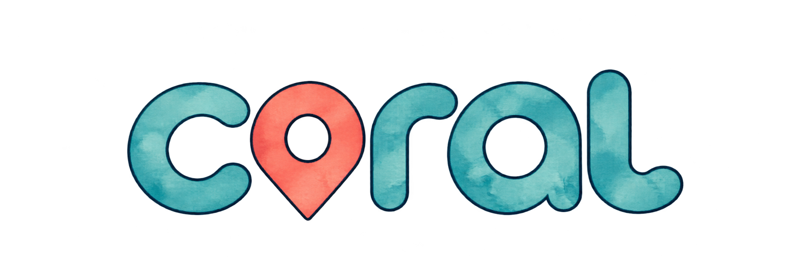
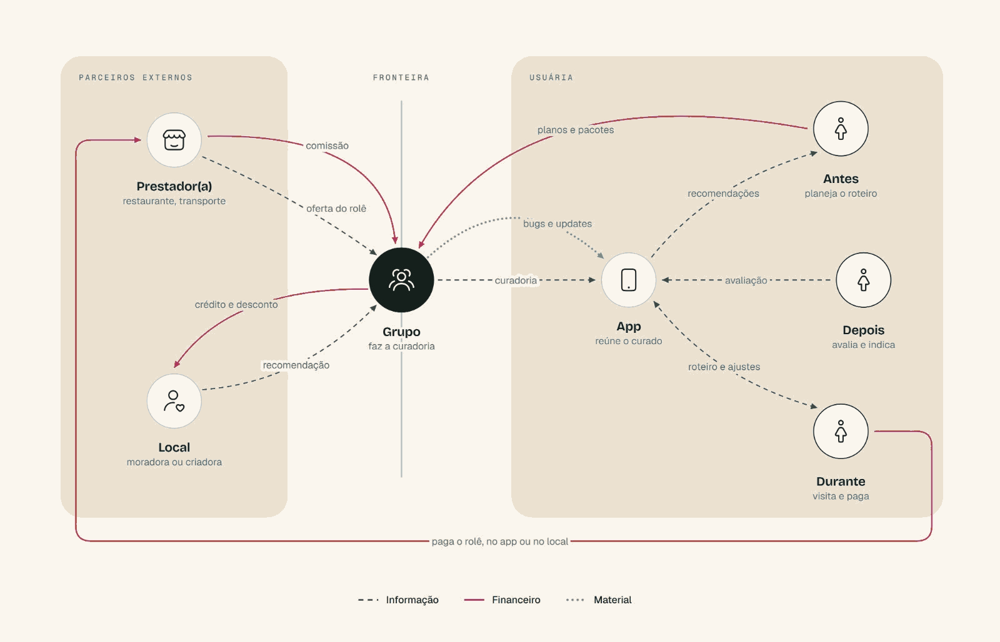
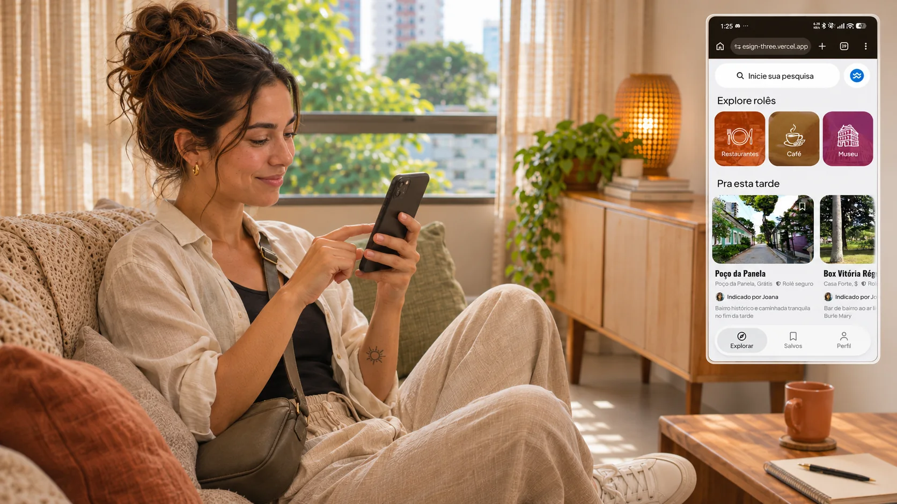
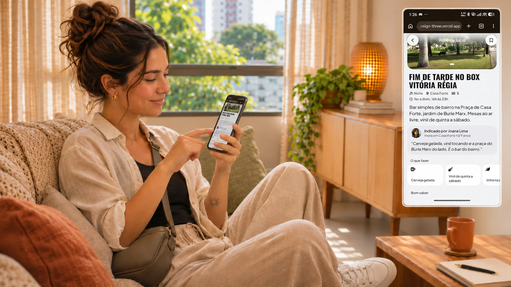
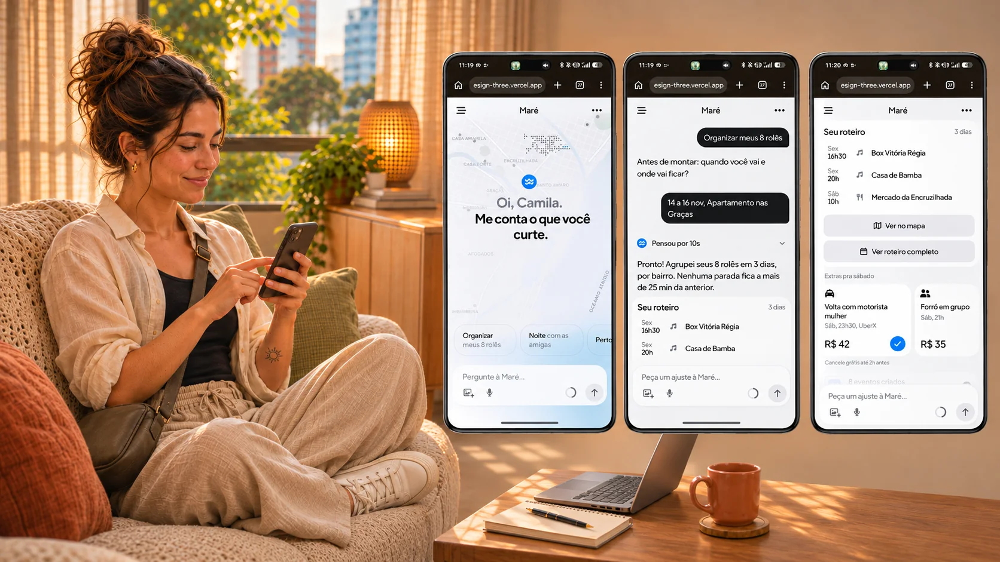
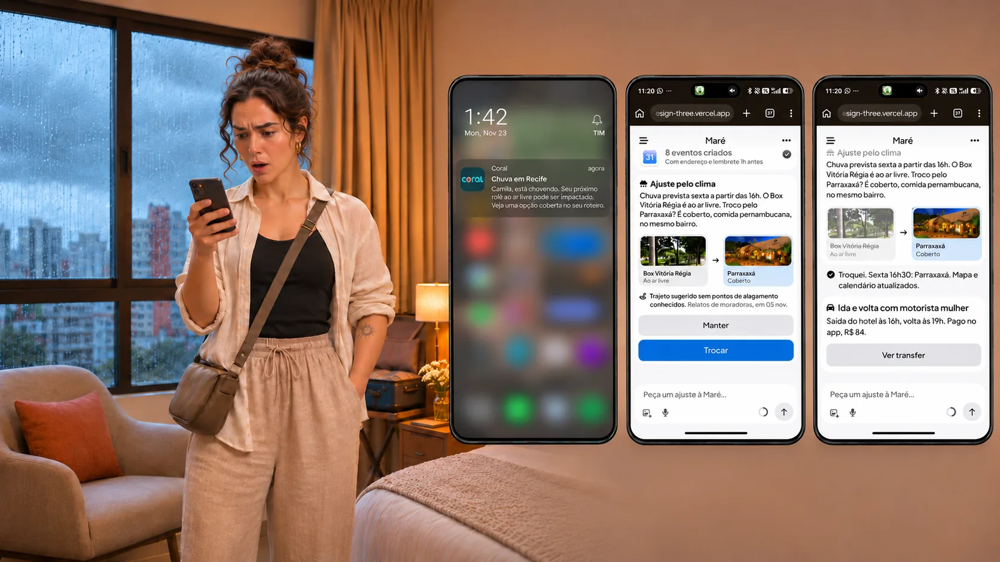
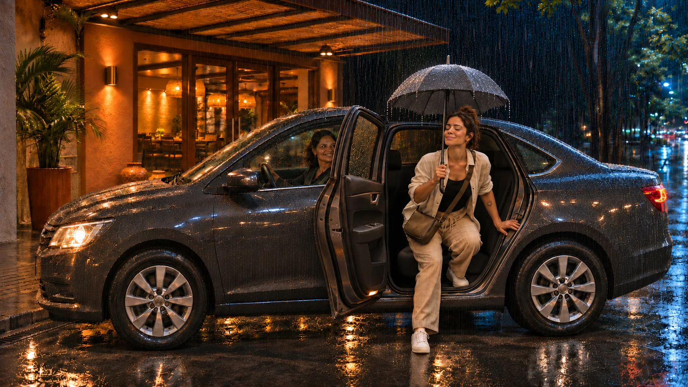
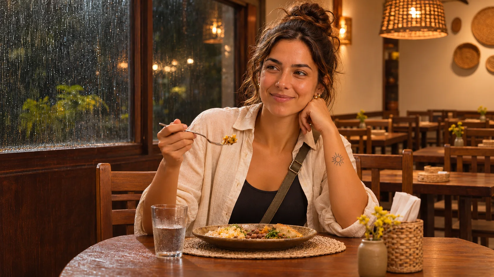
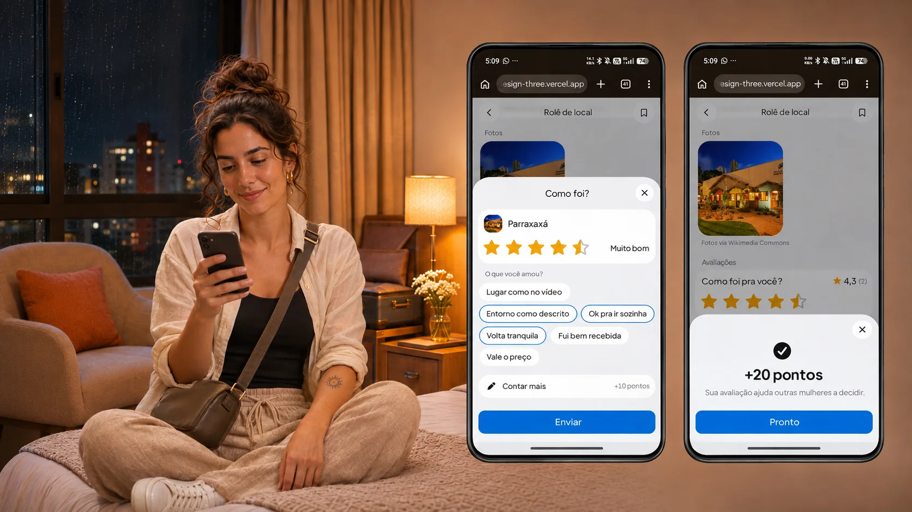

Informação fragmentada
Vídeos, mapas, avaliações e dicas ficam em lugares diferentes; nem sempre é claro o que é relato sincero, publicidade ou informação atual.

Experiências locais com contexto para escolher e liberdade para mudar os planos.
Eulália Albuquerque · Maria Clara Carvalho · Rodrigo Pablo
A equipe parte de uma fricção concreta: as recomendações estão espalhadas, o contexto para decidir é incompleto e o roteiro pode deixar de funcionar quando o clima, o tempo ou a disposição mudam.
Mulheres que viajam querem conhecer a cidade além do roteiro turístico, mas precisam juntar dicas, conferir se ainda valem e entender como chegar e voltar antes de se sentirem prontas para escolher.
Vídeos, mapas, avaliações e dicas ficam em lugares diferentes; nem sempre é claro o que é relato sincero, publicidade ou informação atual.
Um catálogo curto e curado por pessoas locais, acompanhado de um agente que ajuda a organizar e adaptar o roteiro.
Mulheres brasileiras de 22 a 28 anos, viajando sozinhas ou com uma companhia, que buscam experiências autênticas com conforto.
Explorar recomendações com contexto, guardar rolês, montar a própria maré e reconsiderar planos quando algo muda.
A pesquisa reúne desk research, análise de concorrentes e entrevistas semiestruturadas. Os dados secundários ajudam a dimensionar o contexto; as entrevistas e personas orientam decisões de experiência, sem pretensão de representar todas as viajantes.
das mulheres disseram já ter deixado de viajar por segurança; 60,6% relataram insegurança durante uma viagem.
MTur e UNESCO, 2026 · 2.712 mulheresé uma janela frequente de planejamento de viagens domésticas no Brasil.
TRVL Lab/Panrotas, 2023 · cerca de 1.000 respondentesdos passeios e restaurantes podem ser decididos durante a viagem, segundo pesquisa brasileira.
Think with Google Brasil, 2022 · pesquisa e dados de buscados viajantes globais pesquisados reservaram atividades já no destino.
Expedia Traveler Value Index, 2022 · 11.000 respondentesMaria Luísa Marques: viagem de seis dias com o parceiro, inspiração em redes sociais e checagem em mapas, comentários e avaliações. Relatou preocupação com publicidade disfarçada, localização e retorno; em Recife, mudou um plano por distância e pouco movimento.
Letícia Helena: viagem solo de cerca de 22 dias pela Espanha e Itália. Pesquisa em Instagram, TikTok e YouTube, mas confere rotas manualmente; prioriza localização central, conforto e alternativas conforme cansaço, horário e movimento. Relatou erros de rota e transporte em respostas de IA.
Gosta de descobrir lugares fora do roteiro tradicional, cafés, bares e eventos frequentados por moradores. Usa TikTok e Instagram para se inspirar e gosta de deixar espaço para decidir durante a viagem.
Frustrações: muitas recomendações salvas e difíceis de organizar; conteúdo espalhado, patrocinado ou desatualizado; dúvida se o lugar é adequado para duas mulheres.
Prefere planejar uma parte da viagem, equilibrando lugares conhecidos e locais. Salva opções para escolher em conjunto conforme o humor e o tempo disponível.
Frustrações: abrir muitas plataformas para uma atividade; avaliações contraditórias e recomendações repetitivas; descobrir tarde demais algo que gostaria de incluir.
Valoriza autonomia para decidir horários e mudar o trajeto. Quer viver a cidade como quem mora nela e receber indicações de pessoas com experiência real no destino.
Frustrações: recomendações sem contexto do entorno; insegurança sobre chegada e retorno; avaliações antigas ou sem autoria; precisar cruzar várias fontes antes de decidir.
Por que Camila no storyboard? A equipe escolheu essa persona para contar uma jornada mais detalhada e explorar mudanças de plano, contexto de deslocamento e autonomia. Júlia e Marina continuam compondo a compreensão do público do serviço.
Busca referências, verifica quem indicou, compara opções e salva rolês por dia e distância.
Necessidade: reduzir o esforço de pesquisa sem engessar o roteiro.Reavalia clima, horário, energia e deslocamento; muda a opção quando ela deixa de servir.
Necessidade: contexto útil no momento da decisão.Registra a experiência de forma simples e pode ajudar outras viajantes.
Necessidade: contribuição leve e retorno claro.Rolês de Recife e Olinda indicados por quem mora lá, com contexto para decidir com autonomia e uma assistente que organiza e ajuda a reajustar o roteiro durante a viagem.
Aplicativo web com catálogo curado em carrosséis e vídeos curtos, mais a assistente Maré para organizar os rolês salvos e sugerir ajustes.
Reduz a fragmentação de dicas e ajuda a entender autoria, entorno, horários e deslocamento antes de escolher.
Pensado para mulheres de 22 a 28 anos, sozinhas ou acompanhadas, com foco inicial em Recife e região metropolitana e recomendações de quem conhece o lugar.
Catálogo de rolês, informações práticas e de contexto, planejamento com a Maré, extras opcionais e avaliação pós-visita com pontos.

| Jornada | Bastidores · contínuo | Antes da viagem | Durante a estadia | Depois | ||||
|---|---|---|---|---|---|---|---|---|
| 00Base curada | 01Descobre o app | 02Pesquisa rolês em Recife | 03Seleciona e salva rolês | 04Organiza locais com o agente | 05Acompanha e reajusta | 06Vive o rolê | 07Fechamento e recompensas |
|
| Ações da viajante |
|
|
|
|
|
|
|
|
| Pontos de contato | BuscadorSite do appIndicação | Lista curadaFiltro de companhia | Card do rolêVídeo curtoSelo de segurançaCadastroLista de salvos | Roteiro no mapaEvento no calendárioChat do agente | NotificaçãoCalendário atualizado | Entorno na telaTransfer | Pedido de avaliaçãoResumo da viagemCupom 99/Uber |
|
| Gratuito × pago | Grátis, sem login | Grátis, sem login | Grátis · conta pedida ao salvar | Agente grátis com limite de mensagens · extras pagos | Extras pagos: transfer e rolê em grupo | Grátis · pontos viram desconto | ||
| Linha de frente · app e agente de IA | Página do rolê publicada | Página do rolê aberta, sem loginRolês indicados por locais | Lista curta e curadaMotivo de cada indicação | Cards com fotos e avaliaçõesVídeos curtos no showcaseEntorno, selo e dataCadastro curto ao salvar | Perfil da viagemAgente agrupa por dia e distânciaMapa e calendário integradosOferta de extras pagos | Agente monitora clima e horário1 troca principal, perto | Entorno e volta visíveisAtalho para o transfer | Mensagens do agenteCatálogo personalizadoCarteira de pontos |
| Backstage · nós (curadoria) | Analisa indicações pelos critériosCura os vídeosPublica a página do rolêMantém horários e endereçosRevisa o que a comunidade sinalizaGere parcerias de desconto | Monta grupos e transfers | Corrige o que fechou ou mudou | Acompanha grupos e transfers | Avaliações voltam à curadoria |
|||
| Suporte · sistemas | Formulário de indicaçãoPainel da curadoria | Site indexável (SEO)Link rastreável | Base curadaBusca e filtros | Hospedagem de vídeosDados de entorno e seloConta e perfilConsentimento LGPD | IA só com base curadaLimite de mensagensPagamento dos extras | LocalizaçãoNotificações com limite | Pontos e antifraudeIntegração com parceiros |
|
| Parceiros externos · locais recomendam | Indicam rolês para a curadoria | Indicam o app no boca a boca | Nome aparece no card | Ganham pontos quando o rolê é usado |
||||
| Prestadores e parceiros | Ofertam o rolê | Confirmam vagas no grupo | Atendem e recebem no localMotoristas mulheres no transferGuia do rolê em grupoPagam comissão | 99/Uber e restaurantes dão desconto |
||||
Camila descobre a Coral, escolhe um rolê, muda o plano quando a chuva chega, vive uma experiência coberta e devolve à comunidade uma avaliação.
Enquanto pesquisa um planejador de viagens no celular, Camila encontra o resultado da Coral e percebe que pode descobrir rolês indicados por pessoas que vivem na cidade.

Camila abre o app e percorre o catálogo inicial: categorias de rolê, cards locais e recomendações para aquela tarde. A tela que abre é o catálogo, não um chat.

Antes de guardar o rolê, Camila consulta a ficha, vê o que esperar do local e considera se ele combina com o momento da viagem.

Camila informa os dias e a hospedagem, pede à assistente para organizar os rolês guardados e confere a proposta antes de decidir.

Com chuva prevista e o Box Vitória Régia ao ar livre, Camila recebe um alerta e considera a alternativa coberta do Parraxaxá.

Camila desembarca do carro com um guarda-chuva aberto. A motorista parceira permanece no lado dianteiro esquerdo, posição do volante do veículo.

Em um ambiente coberto, Camila faz a refeição sozinha e aproveita o rolê sem que a chuva interrompa a noite.

De volta ao hotel, Camila registra sua avaliação em poucos toques. O retorno contribui com a comunidade e rende pontos para benefícios.
É poder escolher com mais contexto, manter autonomia quando os planos mudam e transformar a própria experiência em informação útil para outras viajantes.
Direção visual baseada no Brand Book: areia #F2E8D7, azul-noite #263C52, terracota #B96649, azul-mar #5DACB1, coral #FA8370; Fraunces para títulos e DM Sans para leitura.
Os momentos da jornada apresentados em sequência.
Descoberta, exploração, escolha e planejamento.
Imprevisto e reajuste pelo clima.
Avaliação da experiência e fechamento.